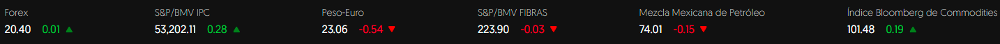

El mejor periodico del Mundo
:quality(70)/cloudfront-us-east-1.images.arcpublishing.com/elfinanciero/TU3AMBE6GND2ZNUTFKNJXQM6JI.jpg)
Ricardo Anaya, excandidato presidencial, se lanzó contra el presidente Andrés Manuel López Obrador este lunes, al asegurar que la consulta de revocación de mandato es para satisfacer su ego, así como para criticar el plan que presentará ante el Instituto Nacional Electoral (INE).
Dijo que el plan de austeridad del INE de López Obrador es un “dardo envenenado” con el cual logrará tres cosas: satisfacer su egolatría, acabar con el INE y asegurar que Morena seguirá en el poder.
Luego, Anaya Cortés cuestionó que se utilizarán 3 mil 800 millones de pesos en esta consulta que nadie ha solicitado, cuando con la misma cifra podrían comprarse 9 millones de vacunas contra el COVID-19 o pagar el tratamiento de todos los niños y niñas con cáncer durante un año.
:quality(70)/cloudfront-us-east-1.images.arcpublishing.com/elfinanciero/SJ3YMMAC2BBJJNMNCFULLU52AA.jpeg)
La preocupación por el coronavirus nuevamente está creciendo entre los habitantes de la Ciudad de México, alertados por el avance de los contagios, principalmente de la variante ómicron. De acuerdo con una encuesta de EL FINANCIERO, realizada entre 500 habitantes adultos de la capital del país, 58 por ciento dijo estar muy preocupado por el coronavirus, 7 puntos más que en diciembre y 17 puntos por arriba del nivel registrado en noviembre, cuando el 41 por ciento de las personas entrevistadas se dijo muy preocupado.
Si bien el 58 por ciento no es la cifra más alta de preocupación durante la pandemia, ésta claramente muestra que la mayoría de la población capitalina está más alerta de los avances de los contagios anunciados en días recientes.

Comerciantes, transportistas, taxistas y prestadores de servicios advierten un aumento de casos.
«Nos piden dinero para poder abrir nuestros negocios», acusó Alejandro Martínez Sidney, dirigente de la Federación de Cámaras de Comercio (Fedecanaco).
A 100 días del nuevo Ayuntamiento morenista en Acapulco, Moartínez Sidney advirtió que el operativo iniciado por el Gobierno federal hace dos meses no ha dado resultados.
«Este operativo no ha dado resultados y la prueba está de que la violencia está imparable», externó sobre la estrategia conjunta con la Federación, la cual arrancó el Guerrero en Noviembre.
Exigió al Presidente Andrés Manuel López Obrador y a la gobernadora de Guerrero, Evelyn Salgado Pineda parar la violencia que existe en Acapulco.
El último caso ligado a este delito es el del empresario farmacéutico Roberto Morales Silva, de 48 años de edad, quien fue sacado de su casa, secuestrado y luego encontrado asesinado.